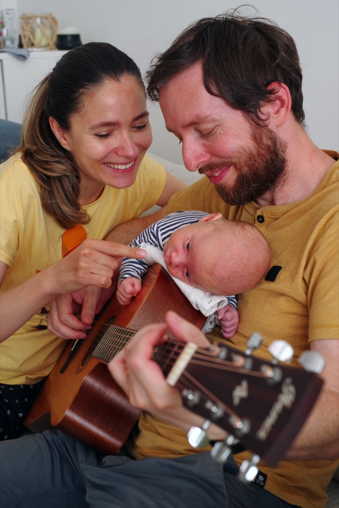
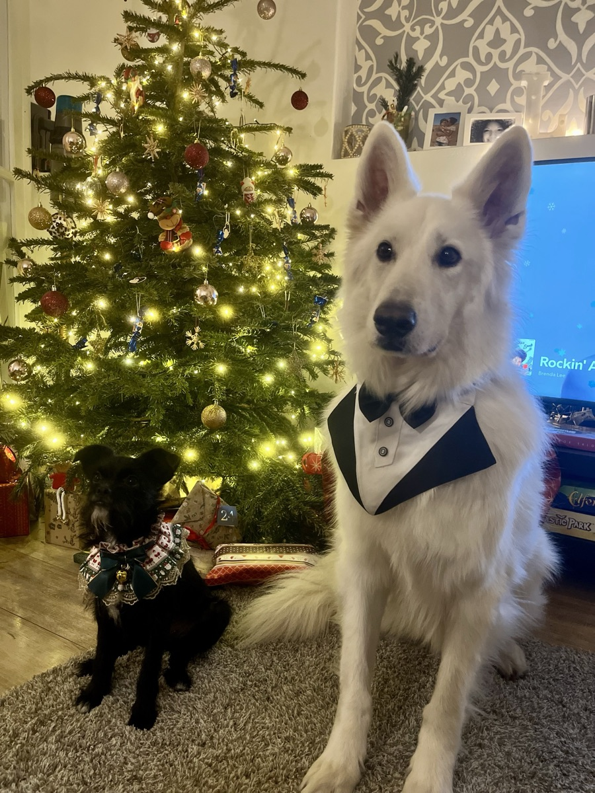

Session 01 · About me
Hi, I'm
Péter
Tamás
Let's connect
linkedin.com/in/tamas-peter-kond
About me · 1 / 3
Professional background
0
+
years in software
About me · 2 / 3
Personal background

Family

The dogs
About me · 3 / 3
Bunsday
18 years and counting